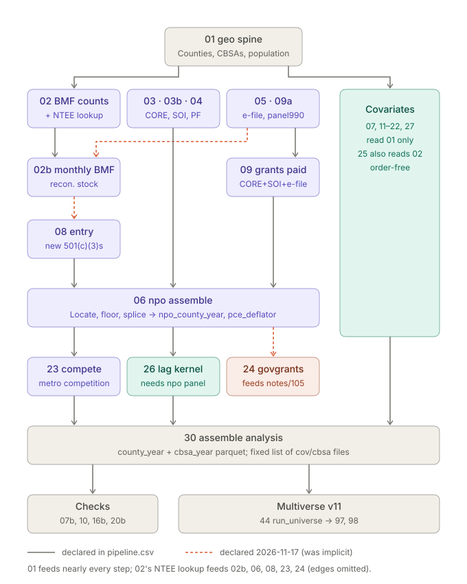

2. Dataset construction
From IRS registrations and returns to county and metro panels, 2000–2024
What the database measures
The database measures nonprofit density: the number and size of charitable nonprofits in a place, relative to what its population would predict. Density differs widely across US communities, and the reasons are much debated: unmet demand for public goods, the supply of resources and civic capacity, and the role of government (Lecy & Van Slyke, 2013). To test those explanations side by side, the database puts every 501(c)(3) public charity in the United States into a county and year, and joins it to about 300 covariates describing each place’s economy, demography, government, politics and civic life.
Two features drive the design:
- Many sources, one geography. Nonprofit counts come from IRS registration files and three generations of financial-return data. Covariates come from about 20 federal and academic sources. Everything is placed on one fixed county geography and then aggregated to metropolitan areas.
- Population sets the expected level. Larger places have more nonprofits almost exactly in proportion to population, but not more spending (Bettencourt et al., 2007). The analysis therefore compares places with their size-expected level (scale-adjusted metropolitan indicators, SAMIs) (Bettencourt et al., 2010). The database stores the counts and totals the SAMIs are computed from.
Units and coverage
| Counties | Core-based statistical areas (CBSAs) | |
|---|---|---|
| Units | 3,144 county-equivalents | 925: 387 metropolitan, 538 micropolitan |
| Geography | 2023 Census delineation, Connecticut planning regions (U.S. Census Bureau, 2023) | OMB 2023 delineation, fixed for all years (Office of Management and Budget, 2023) |
| Years | 2000–2024, annual | 2000–2024, annual |
| Table | county_year.parquet (78,600 rows, 354 columns) |
cbsa_year.parquet (23,125 rows, 422 columns) |
Every source is first placed on county-equivalents. The CBSA table sums counts and dollar totals over a CBSA’s counties, then recomputes rates and shares with the same formulas. Some measures exist only for metros (BLS nonprofit employment, market competition, the metro Gini, the pre-1970 endowment, population-lag kernels), which is why the CBSA table has 68 more columns. Choosing metros only or all CBSAs is a filter on cbsa_year, not a separate table.
The nonprofit outcomes
Four outcome populations come from the same organizations:
- Filers: 501(c)(3) public charities that file a Form 990 or 990-EZ above an inflation-adjusted activity floor. Annual counts come from three generations of return data, spliced together:
- NCCS CORE files for 2000–2010 (Urban Institute, National Center for Charitable Statistics, 2024);
- IRS Statistics of Income exempt-organization extracts for 2011–2019 (Internal Revenue Service, Statistics of Income, 2025a);
- NCCS e-file data for 2020–2024 (Urban Institute, National Center for Charitable Statistics, 2026a).
- Registered stock: every public charity on the IRS Business Master File in a given year, from the NCCS legacy snapshots for 2000–2022 and the monthly BMF for 2023–2024 (Urban Institute, National Center for Charitable Statistics, 2023, 2025).
- Grassroots: registered charities that do not file above the floor (registered stock minus filers). They are 72–80% of the registered stock.
- Spending: total expenses of filers, in 2022 dollars, deflated with the PCE price index (U.S. Bureau of Economic Analysis, 2026a).
Each organization is located with the geocoded unified BMF (Urban Institute, National Center for Charitable Statistics, 2026b). Its subsector comes from its NTEE code. Invalid codes (UND, INV, Z99) are replaced once, from each organization’s latest valid code, and that one rule is applied in every step that uses subsectors.
The covariates
| Family | Examples | Sources |
|---|---|---|
| Population and demography | population 2000–2025, growth since 1970, age, race and ethnicity | U.S. Census Bureau (2026b); U.S. Census Bureau (2000); U.S. Census Bureau (2026a) |
| Economy | income, earnings, GDP, transfers, unemployment, poverty, wages | U.S. Bureau of Economic Analysis (2026b); U.S. Department of Agriculture, Economic Research Service (2024); U.S. Census Bureau (2025b); U.S. Bureau of Labor Statistics (2025) |
| Nonprofit employment | nonprofit share of private employment (metros, 2013–2022) | U.S. Bureau of Labor Statistics (2024) |
| Government | local government revenue and spending, public employment | U.S. Census Bureau (2024); U.S. Census Bureau (2025a) |
| Households | education, homeownership, inequality, commuting | U.S. Census Bureau (2025a); U.S. Census Bureau (2002) |
| Giving | itemized charitable contributions, AGI | Internal Revenue Service, Statistics of Income (2025b) |
| Civic life and politics | social capital index, congregations and adherents, presidential vote | Rupasingha et al. (2006); Northeast Regional Center for Rural Development (2019); Association of Statisticians of American Religious Bodies (2012); Grammich et al. (2023); MIT Election Data and Science Lab (2018); McGovern (2025) |
| Innovation | patents per capita | U.S. Patent and Trademark Office (2026) |
Part 3 lists every source with its years, licence and full citation, and every variable in the final tables.
How the build runs

The build has 30 steps in five layers:
- Geography (step 01). The county spine, CBSA crosswalk and annual population. Almost every later step reads it.
- Nonprofit sources (02–09, 24).
- BMF registrations (02, 02b, 08).
- Financial returns: CORE (03), SOI (03b, 04), e-file (05).
- Grants paid (09a, 09) and government grants (24).
- Step 02 also writes the NTEE lookup that the later steps use.
- Nonprofit panel (06). Filers, grassroots, registered stock and spending by county and year, plus market competition (23) and population-lag kernels (26).
- Covariates (07, 11–22, 25, 27). Each reads only the geography, so their order does not matter.
- Assembly (30). Merges everything into
county_yearandcbsa_year.
Order dependencies. Every file passed between steps is declared in pipeline.csv. The runner refuses to start if a step would read a file that a later step writes. Several dependencies used to be hidden and are now explicit:
- step 02b reads the BMF cache that step 05 fills;
- step 08 reads 02b’s ruling cohorts;
- the NTEE lookup flows from 02 to 02b, 06, 08, 23 and 24.
Part 4 walks through running the build.
Known breaks in the series
Three breaks matter for analysis:
- Source splices. CORE → SOI in 2011 and SOI → e-file in 2020 move spending SAMIs, but not counts. Filer counts for tax year 2020 are about 9% low.
- Group exemptions. A few metros (Memphis, Mankato) are inflated by group-exemption subordinates registered at one address.
- Interpolated covariates. Periodic sources are observed only in some years:
- elections every 4 years;
- the religion census every 10;
- the social capital index 4 times;
- the Census of Governments every 5.
_obs,_linand_locfversions (Part 3).
Use year fixed effects in every panel model, and check any change across 2011 or 2020 against counts before reading it as real (Part 7, Fact 7).